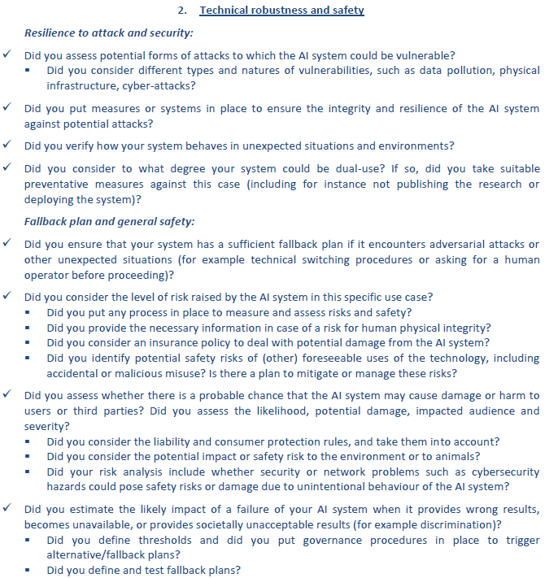
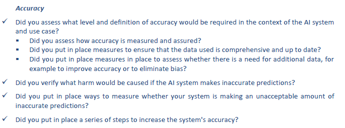
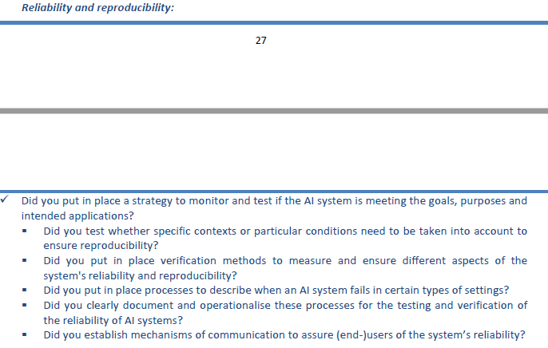

Technical robustness and security¶
Development robustness¶
AI contributors must comply with development standards to ease reliability, readability of procedures and handovers.
Practically, enforce development best practices, that lie among:
Code documentation
Unit tests
Data tests
Pipeline tests
Code reviews
Use of linter
Use of formatters
Data project lifecycle safety¶
Project phase |
Guideline |
Practical consequences |
|---|---|---|
Data collection & preprocessing |
AI contributors must account for potential biases and not introduce additional ones while preprocessing data and/or imputing missing values, leveraging data augmentation, … |
|
AI system training |
While training AI models, AI contributors must carefully understand model’s underlying mechanisms, carefully calibrate them, and carefully analyze results |
|
AI system industrialisation |
While industrialising AI models, AI contributors must ensure AI system’s sustainability |
Security¶
Artificial Intelligence is no exception when it comes to security: AI systems are exposed to a wide range of attacks. Consequently, AI contributors must be sensitised to Machine Learning security and enforce security audits, especially when humans are impacted by an AI system decision. Attacks lie among:
Attack |
Description |
Defense |
|---|---|---|
Data poisoning |
Malicious individuals access data they’re not authorized to and alter them before an AI system training (in the case of a credit score e.g., change the target from “deny” to “accept” for a certain subset of the population) |
|
Backdoors and watermarks |
Code of an AI system is compromised by malicious individuals so that water-marked data can lead the faulty AI system to produce desired outcome (if the AI system is a decision tree e.g., add a faulty leaf that would output a compromised decision) |
|
Surrogate model inversion |
If an AI system is served through an API, malicious individuals can simulate data, query the API and receive predictions from the AI system, and in turn build a surrogate model that could: |
|
Membership inference |
If an AI system is served through an API, malicious individuals could know if an individual / a row was present in the training dataset, and in turn violate individual or group privacy, by: |
|
Adversarial example |
If an AI system is served through an API, malicious individuals can simulate data, query the API, get predictions and in turn learn how to trick the AI system to receive a desired outcome |
Source: H20AI
Appendix - Recommendations from the EU¶
Below are the recommendations directly reported from EU.
  {kind=link}
{kind=link}
{kind=link}